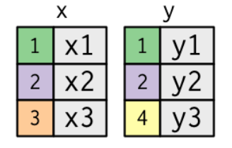

Introdução à Ciência de Dados no R
Aula 06 - Manipulação de Dados - Joins
Aula 06
Antonio Vinícius Barbosa
27-03-2023

Junção de Dados
Junção de Dados
- Nesta parte do curso, veremos algumas funções úteis para realizar a junção (ou joins ou merge) de bases de dados no
R. - O join de bases de dados surge da necessidade de juntar informações de fontes distintas em uma única base de dados.
- Join é um conceito bastante comum para quem já trabalha com bancos de dados (principalmente com SQL).
Junção de Dados
Para realizar joins, utilizamos o conceito de chaves, variáveis que identificam cada observação de maneira única. Alguns exemplos:
- O CPF de um indivíduo
- O número de matrícula de uma aluno
- O CNPJ de um estabelecimento
- O código IBGE de um município
- A sigla de um país…
Em muitas situações, no entanto, as chaves de identificação das unidades de observação estão restritas a bases de dados não públicas. Além disso, nos últimos anos foi necessária a adequação à Lei Geral de Proteção de dados (LGPD).
Junção de Dados
Para entender o conceito de joins, utilizaremos a representação gráfica baseada no livro R for Data Science. Considere dois bancos de dados, com a chave dos indivíduos e o valor de uma variável
Junção de Dados
De forma geral
O pacote dplyr possui funções que possibilitam realizar o joins (ou merge) de duas bases de dados. Podemos utilizar o diagrama de Venn para ter uma visão geral dos diferentes tipos:

Joins
As principais funções utilizadas são:
inner_join()left_join()right_join()full_join()semi_join()anti_join()
Usando o inner_join()
As principais funções utilizadas são:
-
inner_join(): retorna apenas as linhas com correspondências nas duas bases. left_join()right_join()full_join()semi_join()anti_join()
Usando o inner_join()
O resultado do inner_join() é uma nova base que contem as chaves comuns nas duas bases e os valores da variáveis na base de dados x e na base de dados y
Usando o inner_join()
Para um exemplo mais concreto, utilizaremos dois bancos de dados: um com informações sobre os funcionários de uma empresa e outro com a remuneração média para cada cargo.
# Base de empregados
empregados <- tibble(
id_empregado = 1:11,
nome_empregado = c("Renato", "Miguel", "Paulo", "Patrícia", "Inês",
"Saulo", "Diego", "Maria", "José", "Júlia", "Tiago"),
idade = c(30, 31, 29, 30, 25, 30, 30, 35, 24, 31, 29),
uf = c("MG", "DF", "CE", "DF", "DF", "DF", "RJ", "SP", "RS", "SC", "BA"),
id_cargo = c(4, 4, 4, 4, 5, 4, 6, 3, 1, 2, 8)
)
# Base de cargos
cargos <- tibble(
id_cargo = 1:7,
nome_cargo = c("Técnico", "Assistente", "Consultor", "Analista",
"Auditor", "Gerente", "Gestor"),
salario = c(7000, 4000, 15000, 11000, 10000, 13000, 20000)
)Usando o inner_join()
# Visualizando empregados
empregados
## # A tibble: 11 × 5
## id_empregado nome_empregado idade uf id_cargo
## <int> <chr> <dbl> <chr> <dbl>
## 1 1 Renato 30 MG 4
## 2 2 Miguel 31 DF 4
## 3 3 Paulo 29 CE 4
## 4 4 Patrícia 30 DF 4
## 5 5 Inês 25 DF 5
## 6 6 Saulo 30 DF 4
## 7 7 Diego 30 RJ 6
## 8 8 Maria 35 SP 3
## 9 9 José 24 RS 1
## 10 10 Júlia 31 SC 2
## 11 11 Tiago 29 BA 8Usando o inner_join()
O inner_join() cria uma base retornando apenas as ocorrências (linhas) que possuem chaves iguais nos dois conjuntos:
inner_join(empregados, cargos, by = "id_cargo")
## # A tibble: 10 × 7
## id_empregado nome_empregado idade uf id_cargo nome_cargo salario
## <int> <chr> <dbl> <chr> <dbl> <chr> <dbl>
## 1 1 Renato 30 MG 4 Analista 11000
## 2 2 Miguel 31 DF 4 Analista 11000
## 3 3 Paulo 29 CE 4 Analista 11000
## 4 4 Patrícia 30 DF 4 Analista 11000
## 5 5 Inês 25 DF 5 Auditor 10000
## 6 6 Saulo 30 DF 4 Analista 11000
## 7 7 Diego 30 RJ 6 Gerente 13000
## 8 8 Maria 35 SP 3 Consultor 15000
## 9 9 José 24 RS 1 Técnico 7000
## 10 10 Júlia 31 SC 2 Assistente 4000Quizz #1
Suponha que o nome das variáveis utilizadas para fazer o join são distintas, conforme o exemplo a seguir. Como realizar o inner_join() neste caso?
Usando o inner_join()
- Um ponto importante é o fato do
inner_joindesconsiderar do resultado as informações que não tiveram matching. - Isto pode ser uma propriedade não desejada caso queiramos manter todas as informações em uma análise de dados, dada a perda de informações
Outer joins
Como vimos, o inner_join() não leva em consideração as linhas onde as chaves não coincidem. Se quisermos manter todas as informações, utilizamos o conceito de outer joins. Existem três tipos básicos:
left_join()right_join()full_join()
Outer joins
Para os exemplos a seguir, considere as seguintes bases de dados:
# Base de dados pacientes
pacientes <- tibble(
id_paciente = 1:9,
nome = c("A.A.M", "S.S.G.F", "T.I.A", "L.O.S.M", "Y.Q.W",
"F.A", "T.B.N", "J.J.L", "M.S.S"),
exame_a = c(3.8, 3.8, 3.9, 4.0, 4.4, 3.8, 3.7, 3.6, 4.0),
exame_b = c(89.9, 89.9, 99.8, 99.9, 100.0, 89.9,
109.9, 109.9, 110.0),
exame_c = c(0, 1, 1, 0, 1, 1, 0, 0, 1)
)
# Base de dados tratamento
tratamento <- tibble(
id_paciente = c(1, 4, 5, 7, 8, 11, 15, 25),
medicamento = c("A", "B", "A", "B", "A", "A", "B", "B")
)Outer joins
# Visualizando pacientes
pacientes
## # A tibble: 9 × 5
## id_paciente nome exame_a exame_b exame_c
## <int> <chr> <dbl> <dbl> <dbl>
## 1 1 A.A.M 3.8 89.9 0
## 2 2 S.S.G.F 3.8 89.9 1
## 3 3 T.I.A 3.9 99.8 1
## 4 4 L.O.S.M 4 99.9 0
## 5 5 Y.Q.W 4.4 100 1
## 6 6 F.A 3.8 89.9 1
## 7 7 T.B.N 3.7 110. 0
## 8 8 J.J.L 3.6 110. 0
## 9 9 M.S.S 4 110 1Usando o left_join()
As principais funções utilizadas são:
inner_join()-
left_join(): mantém todas as observações do bancox(o banco do lado esquerdo) right_join()full_join()semi_join()anti_join()
Usando o left_join()
A função left_join() preserva todas as observações do lado esquerdo (x) e remove as informações do lado direito (y) que não possuem correspondência.

- O resultado é uma base com informações dos indivíduos 1, 2, e 3 .
- O indivíduo 4 foi excluído por não ter correspondência em
x.
Usando o left_join()
Para preservar todos os pacientes e desprezar os registros de tratamento que não correspondem a pacientes hospitalizados, fazemos:
# Left join do dplyr
left_join(pacientes, tratamento, by = "id_paciente")
## # A tibble: 9 × 6
## id_paciente nome exame_a exame_b exame_c medicamento
## <dbl> <chr> <dbl> <dbl> <dbl> <chr>
## 1 1 A.A.M 3.8 89.9 0 A
## 2 2 S.S.G.F 3.8 89.9 1 <NA>
## 3 3 T.I.A 3.9 99.8 1 <NA>
## 4 4 L.O.S.M 4 99.9 0 B
## 5 5 Y.Q.W 4.4 100 1 A
## 6 6 F.A 3.8 89.9 1 <NA>
## 7 7 T.B.N 3.7 110. 0 B
## 8 8 J.J.L 3.6 110. 0 A
## 9 9 M.S.S 4 110 1 <NA>Usando o right_join()
As principais funções são:
- inner_join()
- left_join()
- right_join(): mantém todas as observações do banco
y(o banco do lado direito) - full_join()
- semi_join()
- anti_join()
Usando o right_join()
O comando right_join() preserva todas as observações do lado direito e remove as informações do lado esquerdo que não possuem correspondência.

- Neste caso, o resultado é uma base com informações dos pacientes 1, 2, e 4. O indivíduo 3 foi excluido por não ter não ter correspondência em
y.
Usando o right_join()
Para preservar todos as linhas do conjunto da direita (tratamento) e desprezar os pacientes sem correspondência de chave, fazemos:
# Right join do dplyr
right_join(pacientes, tratamento, by = "id_paciente")
## # A tibble: 8 × 6
## id_paciente nome exame_a exame_b exame_c medicamento
## <dbl> <chr> <dbl> <dbl> <dbl> <chr>
## 1 1 A.A.M 3.8 89.9 0 A
## 2 4 L.O.S.M 4 99.9 0 B
## 3 5 Y.Q.W 4.4 100 1 A
## 4 7 T.B.N 3.7 110. 0 B
## 5 8 J.J.L 3.6 110. 0 A
## 6 11 <NA> NA NA NA A
## 7 15 <NA> NA NA NA B
## 8 25 <NA> NA NA NA BUsando o full_join()
As principais funções são:
inner_join()left_join()right_join()-
full_join(): mantem todas as observações dos bancosxey semi_join()anti_join()
Usando o full_join()
O comando full_join() preserva todas as observações de ambos os bancos

- O resultado é uma base com informações completas, com as correspondências incompletas representadas por
NA.
Usando o full_join()
Para preservar todos os registros de ambos os conjuntos de dados, fazemos:
# Full join do dplyr
full_join(pacientes, tratamento, by = "id_paciente")
## # A tibble: 12 × 6
## id_paciente nome exame_a exame_b exame_c medicamento
## <dbl> <chr> <dbl> <dbl> <dbl> <chr>
## 1 1 A.A.M 3.8 89.9 0 A
## 2 2 S.S.G.F 3.8 89.9 1 <NA>
## 3 3 T.I.A 3.9 99.8 1 <NA>
## 4 4 L.O.S.M 4 99.9 0 B
## 5 5 Y.Q.W 4.4 100 1 A
## 6 6 F.A 3.8 89.9 1 <NA>
## 7 7 T.B.N 3.7 110. 0 B
## 8 8 J.J.L 3.6 110. 0 A
## 9 9 M.S.S 4 110 1 <NA>
## 10 11 <NA> NA NA NA A
## 11 15 <NA> NA NA NA B
## 12 25 <NA> NA NA NA BCorrespondências com funções do R-base
O R possui funções básicas para realizar . As equivalências com as funções do dplyr são:

Quizz #2
Considere duas bases de dados:
# PIB dos Municipios
pib_municipio <- tibble(
municipio = rep(c("JOAO PESSOA", "CAMPINA GRANDE"), each = 8),
cod_municipio = rep(c(2507507, 2504009), each = 8),
trim = rep(c(1, 2, 3, 4), 4),
ano = rep(rep(c(2017, 2018), each = 4), 2),
pib = c(12.3, 12.7, 13.6, 13.8, 12.8, 12.9, 20.3, 21.1,
7.4, 7.5, 8.0, 8.3, 9.3, 10.2, 9.9, 11.3) # valor em milhoes
)
# Populacao por ano
pop_municipio <- tibble(
nome_mun = rep(c("João Pessoa", "Campina Grande"), times = 2),
cod_ibge = rep(c("2507507", "2504009"), times = 2),
ano = rep(c(2017, 2018), each = 2),
populacao = c(811526, 407245, 812746, 409762)
)Apenas utilizando as funções do dplyr, pede-se para calcular o PIB per capita anual para dos dois municipios.
Usando o semi_join()
As principais funções são:
inner_join()left_join()right_join()full_join()-
semi_join(): retornar todas as linhas dexCOM correspondência emy anti_join()
Usando o semi_join()
A representação do semi_join() é dada pela figura a seguir

Usando o semi_join()
Para entender o conceito, utilizaremos dados built-in do pacote dplyr
Usando o semi_join()
Como resultado, temos uma base de dados apenas com as linhas da base do lado esquerdo (band_members) com correspondência no lado direito (band_instruments)
Usando o anti_join()
As principais funções são:
inner_join()left_join()right_join()full_join()semi_join()-
anti_join(): retorna todas as linhas dexSEM uma correspondência emy
Usando o anti_join()
A representação do anti_join() é dada pela figura a seguir

Usando o anti_join()
Joins
Para outros tipos mais específicos de joins como
cross_join()filter_joinsnest_join()
Ver capítulo 20 de R for Data Science.
ICDR